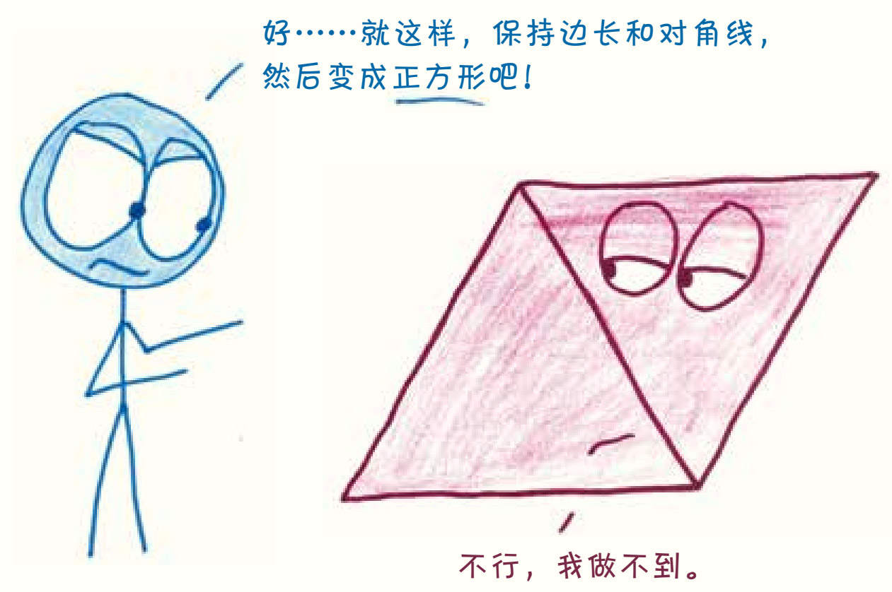
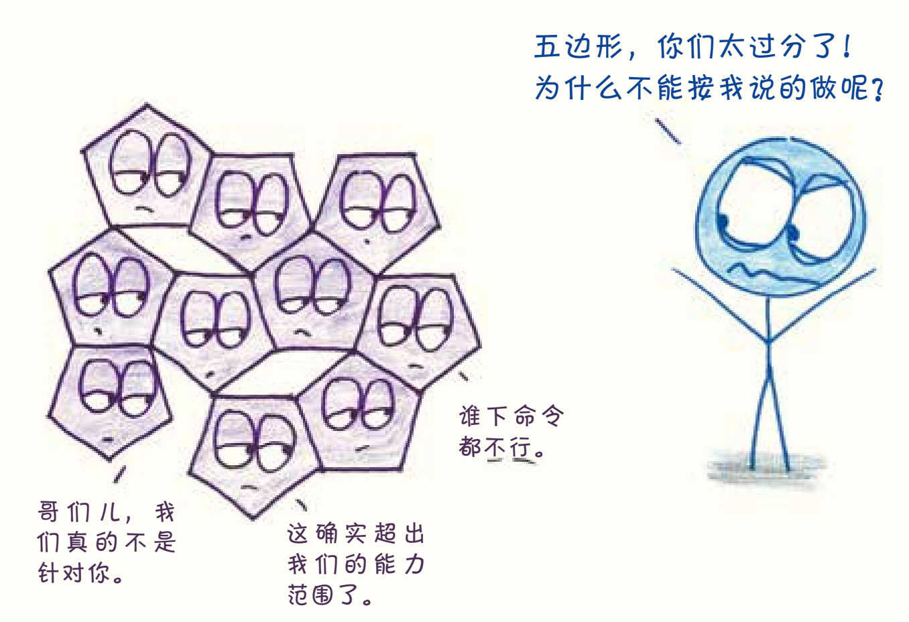
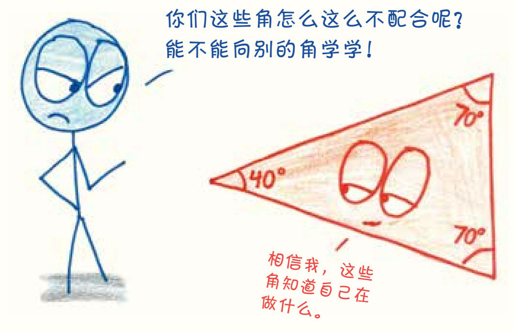

在这部分开讲之前，我得先给你泼一盆善意的冷水：在这个世界上，有些事并不是有决心、愿意努力就能做到的。
比如说，你想创造一种新的正方形，让它的对角线和边一样长。我不是故意要打击你，但不论你怎么努力，都不可能画出这样一个正方形。

比如说，某一天，你设计了一种五边形的地砖。那我要很遗憾地告诉你，用这些瓷砖是铺不了地板的，瓷砖和瓷砖之间肯定会有缝隙。1

又或者，你想画一个独特的等边三角形，希望每个角的大小都是70°、49°或123°——不好意思，无论哪个数字都是不可能的：等边三角形的每个角都得正好是60°，不能多也不能少，否则它的三条边就不可能相等。

人类世界的法律是相对灵活的，有谈判和协商的空间，也有废止的可能。就拿合法饮酒年龄来说，在美国是21岁，在英国是18岁，在古巴是16岁，在柬埔寨是“想喝就喝”。每个国家都有可能因为一时头脑发热而收紧或放松饮酒法规（当然，当地人喝酒越多，法律越宽松，一时头脑发热的概率就越大）。几何定律就不一样了，这里完全没有回旋的余地2：在几何的世界里，没有总统发布赦免令，没有陪审团判定被告无罪，没有警察讲人情，只给个警告就放过你。数学的规则是一种内在约束，而且这样的约束从本质上来说就是牢不可破的。
然而，就像前几章说的那样，有约束并不是件坏事，因为正是这些约束孕育了创造力。具体的例子我们以后还会看到很多。几何规定了各种形状“无法做到”的事，而数学则在具体的研究中逐步发现和阐明了这些形状“可以做到”的事，二者结合后，设计就诞生了。从设计坚固的建筑，到设计实用的纸张，再到设计能够摧毁行星的空间站，都少不了因几何学的限制而迸发的灵感。
所以，别再把那句“一切皆有可能”的口号挂在嘴边了，这句话虽然听上去振奋人心，却和现实相去甚远，很多励志格言都这样。现实虽然更残酷，但也更奇妙。